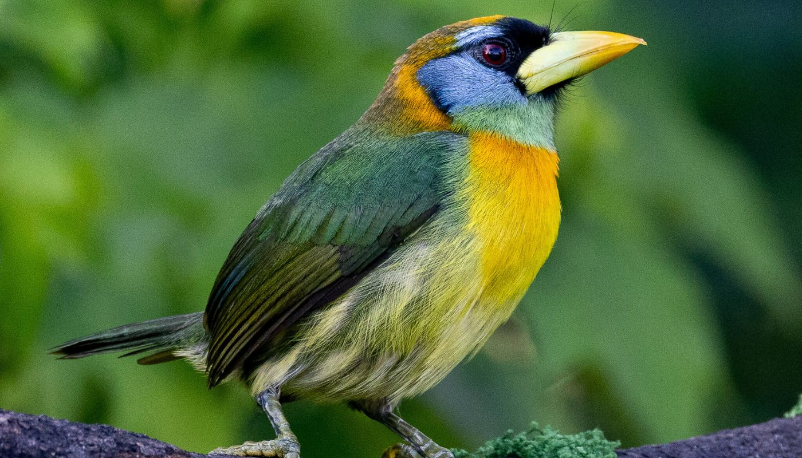
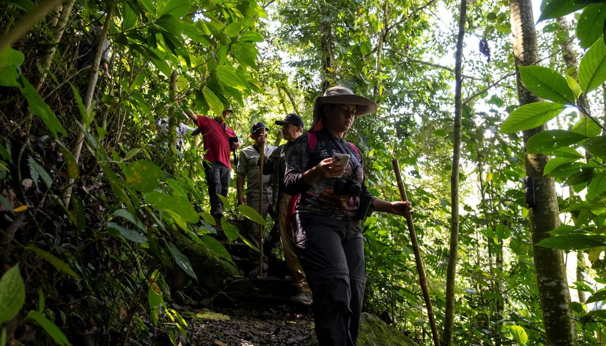
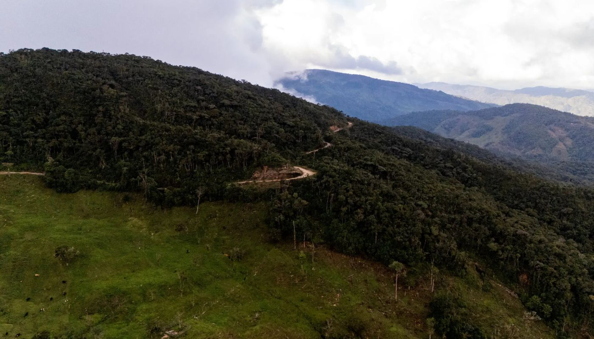

Samantha Giraldo, de 21 años, estaba en la casa de su familia en Colombia la Navidad pasada cuando recibió un correo electrónico de un entusiasta de la observación de aves en India, al otro lado del mundo.
Merlin y eBird, las aplicaciones de observación de aves más utilizadas del mundo, habían destacado el pequeño hotel de la familia Giraldo —que lleva el nombre del guácharo, ave también conocida como pájaro aceitoso que se encuentra a menudo en la propiedad— como un lugar de interés para la observación de aves. Él se estaba preparando, escribió, para emprender el largo viaje para verlo.
Fue entonces cuando Giraldo sintió que algo fundamental había cambiado.
“Mucha gente nos dice que así es como nos encontraron”, dijo, refiriéndose a las aplicaciones. “No solo observadores de aves ávidos, sino mochileros, jubilados, personas que se están iniciando en esta pasión”.
Colombia, hogar del mayor número de especies de aves conocidas por los ornitólogos, ha tenido dificultades durante mucho tiempo para atraer a tantos “avituristas” como países más pequeños pero políticamente más estables, como Costa Rica.
Conoce cómo el avistamiento de aves está transformando los territorios colombianos, uniendo la ciencia, el turismo sostenible y la paz.

Colombia alberga más de 1900 especies de aves. Descubre por qué se ha convertido en el epicentro mundial para aficionados del avistamiento.
Ver más
Conoce a las comunidades locales y antiguos cazadores que hoy protegen los ecosistemas y transforman sus regiones a través del turismo sostenible.
Ver más
Desde la Sierra Nevada hasta el Amazonas: un recorrido por los mejores senderos y reservas naturales para encontrar especies endémicas.
Ver más